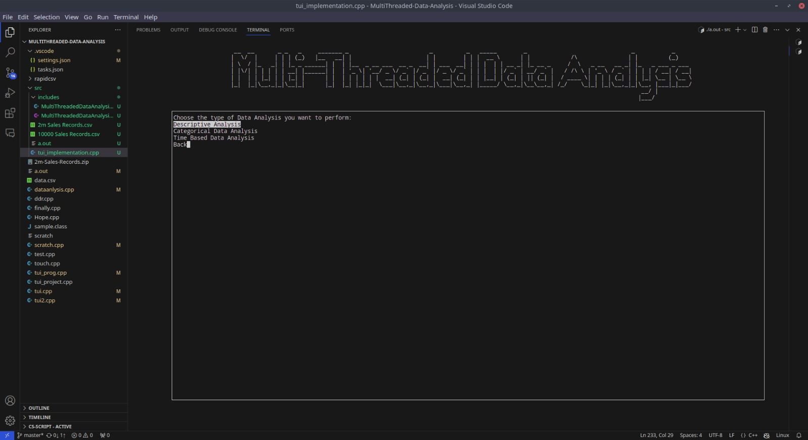
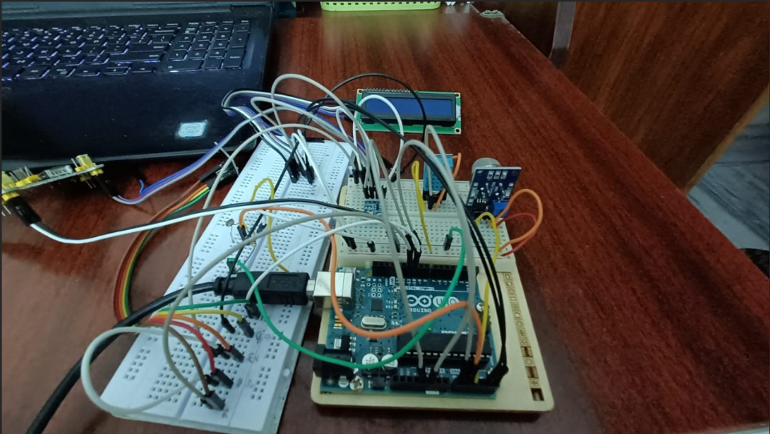
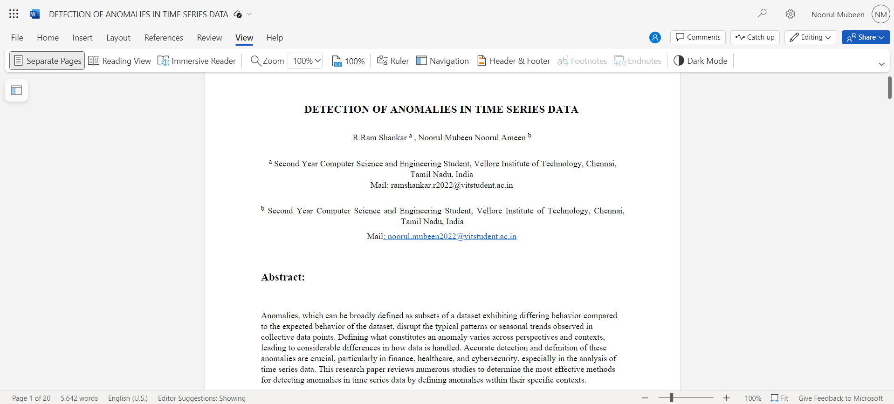

This project involves the development of a multi-threaded data analysis application using C++. Check out the code on GitHub for more details.
Experience the Weather Monitoring System project implemented with Arduino Uno. Click the image to watch the video for a demonstration.
Explore the research article on the detection of anomalies in time series data. Click the image to access the document.
